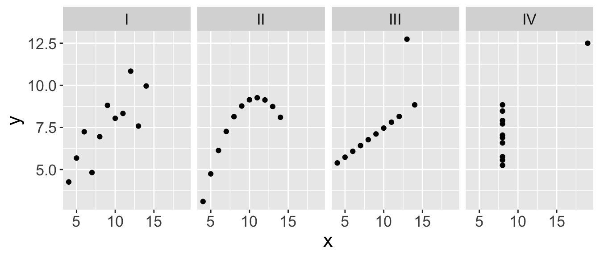
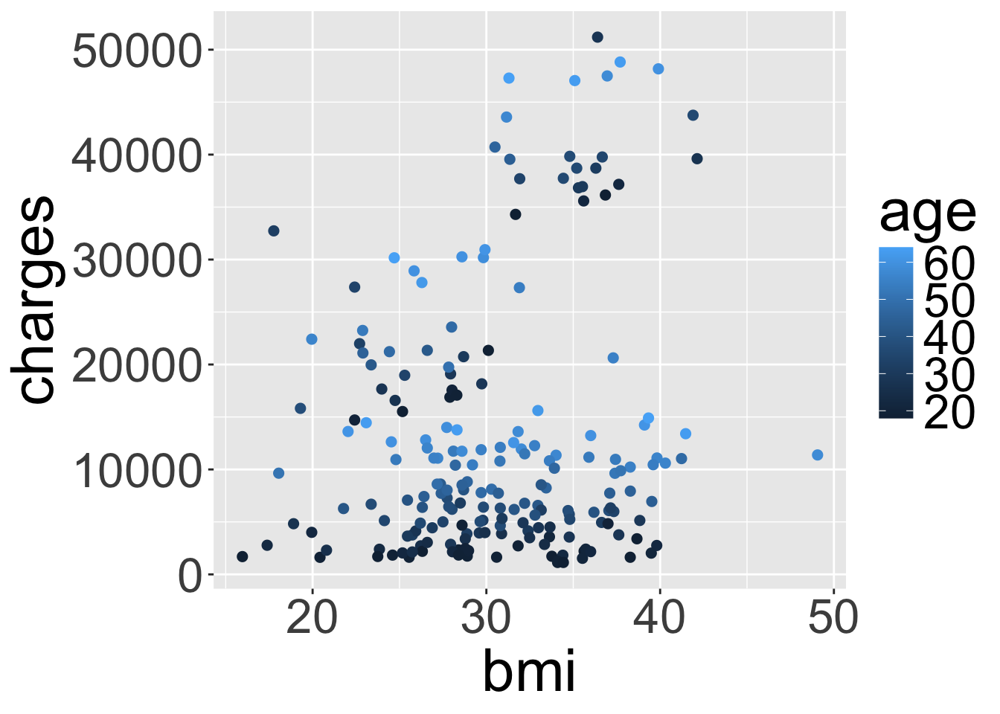
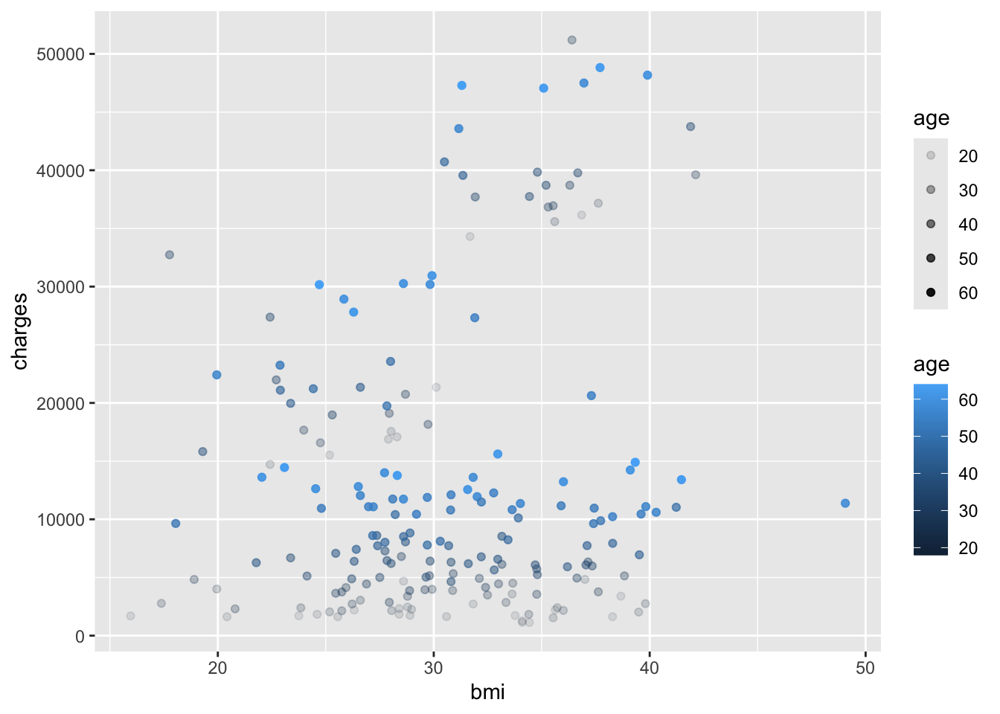
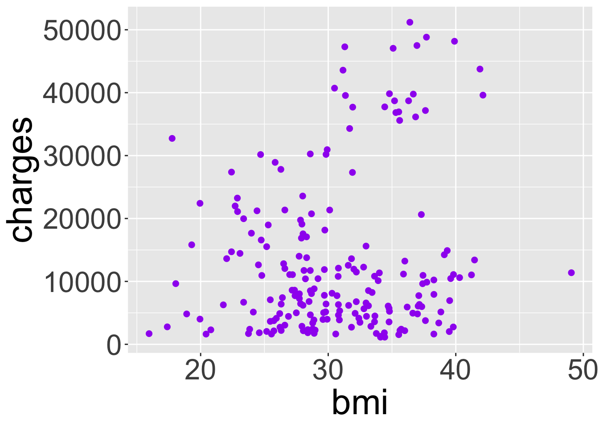
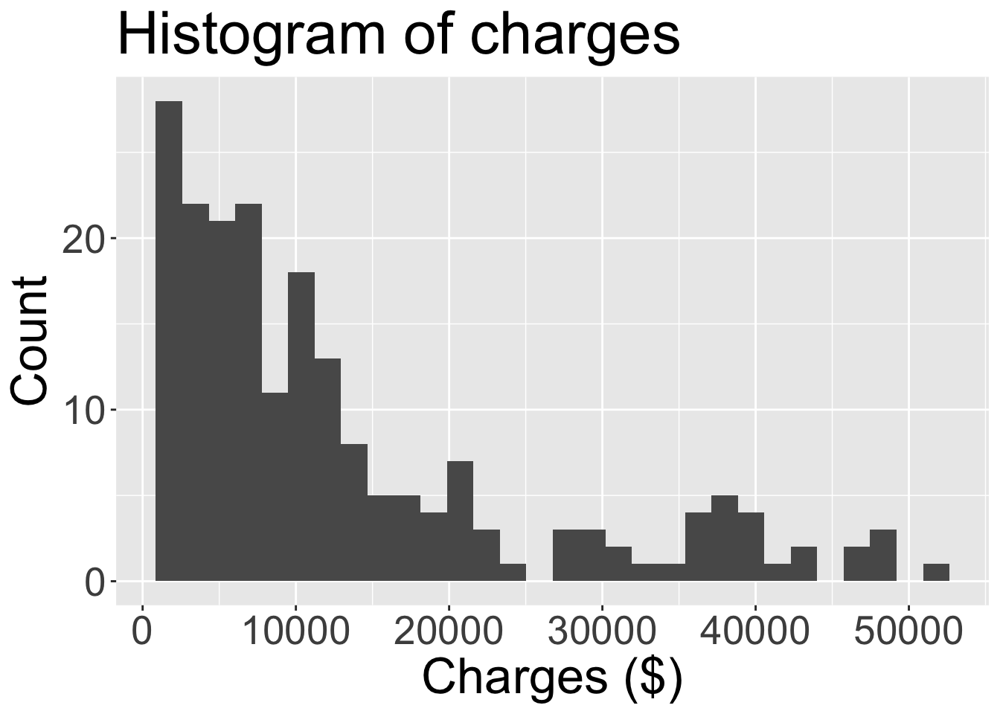

── Attaching core tidyverse packages ──────────────────────── tidyverse 2.0.0 ──
✔ dplyr 1.1.4 ✔ readr 2.1.5
✔ forcats 1.0.0 ✔ stringr 1.5.1
✔ ggplot2 3.5.1 ✔ tibble 3.2.1
✔ lubridate 1.9.3 ✔ tidyr 1.3.1
✔ purrr 1.0.2
── Conflicts ────────────────────────────────────────── tidyverse_conflicts() ──
✖ dplyr::filter() masks stats::filter()
✖ dplyr::lag() masks stats::lag()
ℹ Use the conflicted package (<http://conflicted.r-lib.org/>) to force all conflicts to become errors
Rows: 200 Columns: 7
── Column specification ────────────────────────────────────────────────────────
Delimiter: ","
chr (3): sex, smoker, region
dbl (4): age, bmi, children, charges
ℹ Use `spec()` to retrieve the full column specification for this data.
ℹ Specify the column types or set `show_col_types = FALSE` to quiet this message.Visualizations with ggplot
Housekeeping
- TA hours tonight 7-9pm, Sunday 7-9pm
- Office hours tomorrow 2-4pm
- Observations of Prof. Tang taking place next week
Exploratory data analysis
Exploratory data analysis (EDA) is an approach to analyzing data sets to summarize the main characteristics.
- Often visual through plots
Because of its name “exploratory”, we typically perform EDA at the beginning of a project
Can also calculate summary statistics and perform data wrangling/manipulation/transformation at (or before) this stage of the analysis
Tidy data
When working with data in
R, always look at the data to ensure it is in tidy format:- Each row represents an observation, each column represents a variable describing the observations
anscombedata frame: four datasets each with 11 observations each and the same two variables
Non-tidy version:
x1 x2 x3 x4 y1 y2 y3 y4
1 10 10 10 8 8.04 9.14 7.46 6.58
2 8 8 8 8 6.95 8.14 6.77 5.76
3 13 13 13 8 7.58 8.74 12.74 7.71
4 9 9 9 8 8.81 8.77 7.11 8.84
5 11 11 11 8 8.33 9.26 7.81 8.47
6 14 14 14 8 9.96 8.10 8.84 7.04
7 6 6 6 8 7.24 6.13 6.08 5.25
8 4 4 4 19 4.26 3.10 5.39 12.50
9 12 12 12 8 10.84 9.13 8.15 5.56
10 7 7 7 8 4.82 7.26 6.42 7.91
11 5 5 5 8 5.68 4.74 5.73 6.89Tidy version (first 15 rows):
set x y
1 I 10 8.04
2 I 8 6.95
3 I 13 7.58
4 I 9 8.81
5 I 11 8.33
6 I 14 9.96
7 I 6 7.24
8 I 4 4.26
9 I 12 10.84
10 I 7 4.82
11 I 5 5.68
12 II 10 9.14
13 II 8 8.14
14 II 13 8.74
15 II 9 8.77Data visualization
Data visualization is the creation and study of the visual representation of data
We have learned how to use base
Rcode to make simple histograms and scatterplots. We will now useggplot2which makes customization easier
Why do we visualize?
- Summary statistics from each of the four datasets in
anscombe:
# A tibble: 4 × 5
set mean_x mean_y sd_x sd_y
<fct> <dbl> <dbl> <dbl> <dbl>
1 I 9 7.50 3.32 2.03
2 II 9 7.50 3.32 2.03
3 III 9 7.5 3.32 2.03
4 IV 9 7.50 3.32 2.03- Let’s visualize the four data sets. What would be an appropriate type of plot to examine the relationship between the two variables
xandy?

Introduction to ggplot
We will learn how to create histograms, box plots, and scatterplots using the
ggplot()function from theggplot2library- Plots are constructed in layers
At a minimum, we need to specify 1) the dataset, 2) variable(s) from the dataset we’d like to plot, and 3) the type of plot
- How does this differ from what we’ve seen in the past?
This is what the code will generally look like. Values in < > and
xxxdenote what you as the coder need to specify.
ggplot(data = <dataset>, # specify data frame
mapping = aes(x = <x-var>)) + # specify variables to be used in plot
geom_xxx() + # specify plot type
<other options>Inheriting arguments
Many functions related to plotting in ggplot take the form
geom_xxx()The Help file for these functions show that the first two arguments are
mappinganddata. These are automatically inherited from themappinganddataarguments in the first layerggplot()function- i.e. you don’t need to re-specify them, unless you are trying to add a new data frame’s data to your visualization

Additional variables + modifications
We emphasize making informative and useful visualizations.
Informative titles and labels
Plot should tell a meaningful story
Depending on the plot and data, we can map additional variables by:
Specifying visual cues via aesthetics: color, size, shape, alpha (transparency)
Faceting (will see this next week)
Live code
Note: most of the code I will show is included in the remaining slides. However, we will most likely go off-script based on questions from the class!
Slides on ggplot()
geom_histogram()
ggplot(data = insurance, mapping = aes(x = charges)) +
geom_histogram()`stat_bin()` using `bins = 30`. Pick better value with `binwidth`.
Note the message provided when you execute this code!
geom_histogram() cont.
To improve on histogram we change the bin width.

geom_boxplot()

geom_point()
ggplot(data = insurance, mapping = aes(x = age, y = charges)) +
geom_point()
Aesthetics: color
ggplot(data = insurance,
mapping = aes(x = bmi, y = charges,
col = age)) +
geom_point()
ggplot(data = insurance,
mapping = aes(x = bmi, y = charges)) +
geom_point(aes(col = age))
Aesthetics: transparency
Specifying multiple aesthetics
ggplot(data = insurance, mapping = aes(x = bmi, y = charges, col = age, alpha = age)) +
geom_point()
When to map to variable
What’s going on here?
ggplot(data = insurance,
mapping = aes(x = bmi, y = charges)) +
geom_point(col = "purple")
ggplot(data = insurance,
mapping = aes(x = bmi, y = charges)) +
geom_point(aes(col = "purple"))
Key takeaway: aesthetics should correspond/map to a variable in the data frame
- “Fixed” visual cues are set outside of
aes()
- “Fixed” visual cues are set outside of
Adding a title
ggplot(data = insurance, mapping = aes(x = charges)) +
geom_histogram() +
ggtitle("Histogram of charges",
subtitle = "In USD")`stat_bin()` using `bins = 30`. Pick better value with `binwidth`.
Changing axis labels
By default, axis titles are taken from variable name specified in aes(). To change:
ggplot(data = insurance,
mapping = aes(x = charges)) +
geom_histogram() +
ggtitle("Histogram of charges") +
xlab("Charges ($)")`stat_bin()` using `bins = 30`. Pick better value with `binwidth`.
ggplot(data = insurance,
mapping = aes(x = charges)) +
geom_histogram() +
labs(title = "Histogram of charges",
x = "Charges ($)", y = "Count")`stat_bin()` using `bins = 30`. Pick better value with `binwidth`.